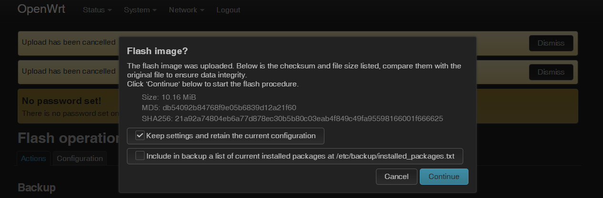

openwrt 系统升级
小版本升级
小版本升级，例如 19.05-> 19.07。
这种小版本的升级最方便的就是通过 Attended Sysupgrade 功能，可以保留已安装的包和系统设置。最大限度地无缝过渡。官方介绍：https://openwrt.org/docs/guide-user/installation/attended.sysupgrade
需要先安装 Attended Sysupgrade luci 界面包：
opkg install luci-app-attendedsysupgrade
建议使用此功能前依然做一次数据备份。
然后重新登录 luci，在 system - Attended Sysupgrade 找到入口，点击 search for firmware upgrade 即可在线搜索可更新的系统。
大版本升级
最方便的就是通过 luci 界面升级系统，目前支持直接升级的大版本顺序是：19.07 > 21.02 > 22.03 > 23.05。
大版本升级改动
openwrt 21：https://openwrt.org/releases/21.02/notes-21.02.0
- WPA3 support included by default
- TLS and HTTPS support included by default
- LuCI is now available over HTTPS
- Initial DSA support replaces the swconfig system
- New network configuration syntax and board.json change
- Kernel with container support
openwrt 22：https://openwrt.org/releases/22.03/notes-22.03.0
- Firewall4 based on nftables，superseding the iptables-based firewall3
- Dark mode in LuCI
openwrt 23：https://openwrt.org/releases/23.05/notes-23.05.0
- Switch from wolfssl to mbedtls as default，TLS 1.3 Support
- Rust Package Support
数据备份
每个版本升级实际上就是重新刷入了一次固件，所以之前的配置文件什么的基本上都会被覆盖，所以系统内修改过的配置最好做一次备份。
打开 luci 界面，选择 system - backup/flash firmware，在 configuration 菜单栏中将需要保存的文件或目录定义出来，然后在 action 菜单栏中选择 backup - generate archive 即可保存备份到本地。
已安装包列表
可以通过 awk 脚本识别出自己手动安装的包列表，方便更新系统后安装回去，下载脚本：https://github.com/richb-hanover/OpenWrtScripts/blob/main/opkgscript.sh
执行以下命令会保存已安装的包列表到 /etc/config/opkg.installed：
opkgscript.sh -v write
执行以下命令会识别并安装 /etc/config/opkg.installed 列表中的包：
opkgscript.sh -v install
也可以执行以下 awk 脚本可以单独列出自己手动安装的包列表：
#!/usr/bin/awk -f
BEGIN {
ARGV[ARGC++] = "/usr/lib/opkg/status"
cmd="opkg info busybox | grep '^Installed-Time: '"
cmd | getline FLASH_TIME
close(cmd)
FLASH_TIME=substr(FLASH_TIME,17)
}
/^Package:/{PKG= $2}
/^Installed-Time:/{
INSTALLED_TIME= $2
# Find all packages installed after FLASH_TIME
if ( INSTALLED_TIME > FLASH_TIME ) {
cmd="opkg whatdepends " PKG " | wc -l"
cmd | getline WHATDEPENDS
close(cmd)
# If nothing depends on the package, it is installed by user
if ( WHATDEPENDS == 3 ) print PKG
}
}
EOF保存以上内容到 listuserpackages.awk 文件中并执行即可列出用户自行安装包列表。
下载升级固件
x86 版本的 openwrt 的升级固件就是全新安装时候用的固件，直接在官网下载需要版本的 gz 压缩包即可。
下载地址：https://downloads.openwrt.org/releases/
我下载的是：generic-ext4-combined.img.gz，注意不要解压出来，保留压缩包即可。
进入 luci 的 system - backup/flash firmware 选择 Flash image ，然后选择刚才下载的压缩包即可上传更新，会提示是否保留设置和配置，跨大版本的升级必须取消选择保留数据，否则可能升级失败：

如果升级后卡在 grub 界面说明可能是由于选择了保留配置导致升级失败了，可以参考官方教程通过 failsafe mode 恢复默认配置：Failsafe mode, factory reset, and recovery mode，或者直接重新安装系统。
网络配置
稍等几分钟安装好后你可能会发现 luci 无法在局域网中访问了，这是由于新安装的固件恢复了 network 配置，需要直接到 openwrt 设备上配置网络。
配置教程参考：openwrt network 配置
配置好网络后在局域网设备中可以用 ssh 登录了，此时会发现提示：
@@@@@@@@@@@@@@@@@@@@@@@@@@@@@@@@@@@@@@@@@@@@@@@@@@@@@@@@@@@
@ WARNING: REMOTE HOST IDENTIFICATION HAS CHANGED! @
@@@@@@@@@@@@@@@@@@@@@@@@@@@@@@@@@@@@@@@@@@@@@@@@@@@@@@@@@@@
IT IS POSSIBLE THAT SOMEONE IS DOING SOMETHING NASTY!
Someone could be eavesdropping on you right now (man-in-the-middle attack)!
It is also possible that a host key has just been changed.
The fingerprint for the RSA key sent by the remote host is
SHA256:U9XODs/7A4k065pxSMyEtQ2m98v2P0bf/ML0MfzU.
Please contact your system administrator.
Add correct host key in C:\\Users\\Marco Nie/.ssh/known_hosts to get rid of this message.
Offending RSA key in C:\\Users\\Marco Nie/.ssh/known_hosts:6
Host key for 192.168.244.1 has changed and you have requested strict checking.
Host key verification failed.这是由于更新系统后 ssh 指纹发生了变化，需要删除本地缓存的 openwrt 设备的指纹在登陆，windows 系统 ssh 指纹保存地址为当前用户目录下的 .ssh 文件夹。
升级后续
升级后可以通过之前的脚本列出的已安装包的列表将自己需要的包安装回去，同时将备份数据按照新系统的格式恢复回去。
从 openwrt 21 开始修改了 network 配置文件格式，参考：https://blog.niekun.net/archives/2291.html
从 openwrt 22 开始替换 iptables 为 nftables，需要原始工具的话可以自行安装回去：opkg install iptables
参考链接
Opkg package manager
OpenWRT 19.07 to 21.02.0 upgrade
标签：无